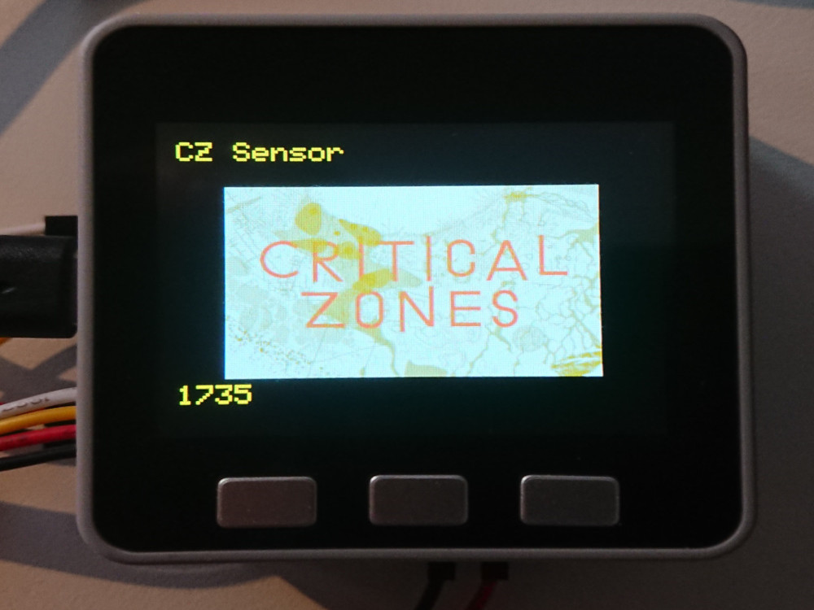
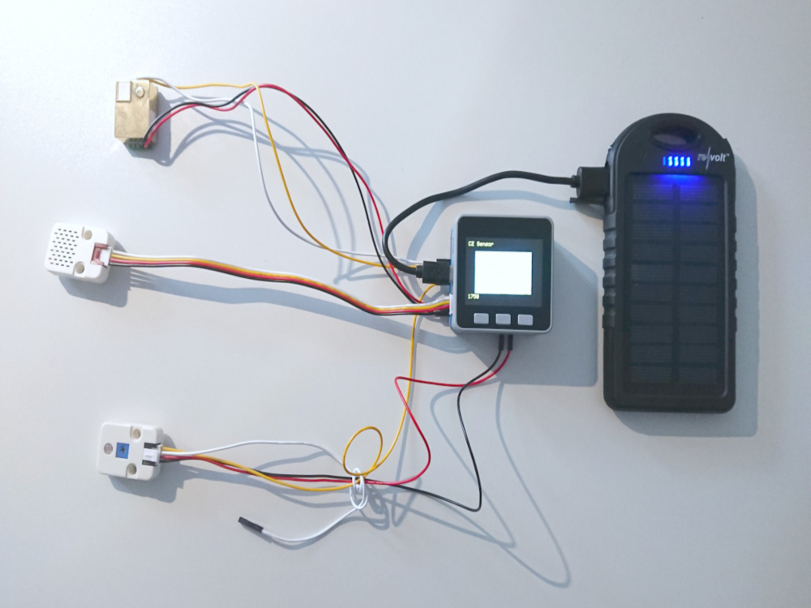
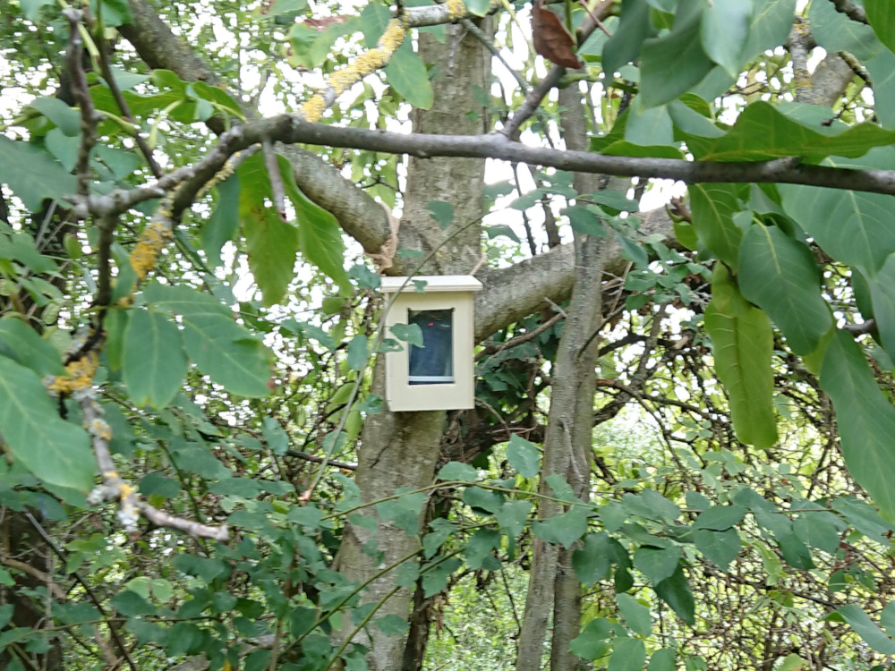

{{date}}
Die Wiese lebt in der Ausstellung. Nicht ganz - Aber wir haben Verbindung!
Temperatur, Luftfeuchtigkeit, Luftdruck, Helligkeit und CO2 werden stündlich gemessen
und hier sichtbar gemacht. Signalstärke und Batterieladung zeigen
den Zustand der Beobachtungsstation.
Daten und Code sind für alle verfügbar, siehe Github
The orchard is part of the exhibition. Well, not quite. But we have the link!
Temperatur, humidity, air pressure, brightness and CO2 concentration are measured hourly and on display at this place.
Wireless signal-strength and battery charge level indicate the condition of our observatory.
Data and code of the project are available freely, see Github


